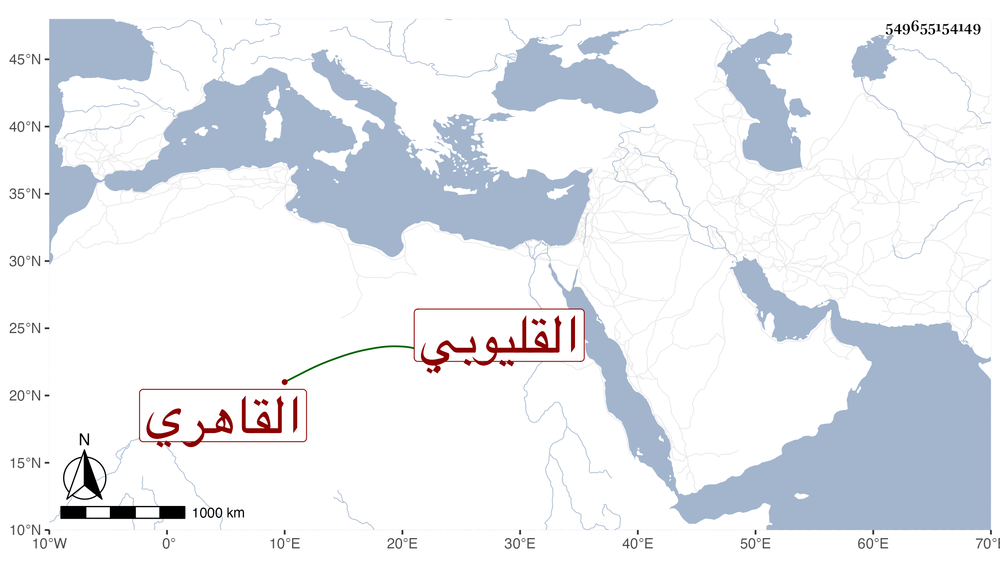

0902Sakhawi.DawLamic.ITO20230111-ara1.EIS1600.549655154149
Biography ID: 549655154149
أحمد بن إبراهيم بن سليمان بن إبراهيم الشهاب القليوبي ثم القاهري أخو علي الآتي مولده بعد الثمانين أو قبلها تقريبا وسمع على المطرزي والتقي الدجوي والشرف بن الكويك في سنة أربع وتسعين وسبعمائة ما حدث من أبي داود وحدث سمع منه الفضلاء سمعت عليه وكان أحد الصوفية بسعيد السعداء وممن يتكسب ببيع الشبارى ونحوها مع الخير ولين الجانب مات في أوائل رمضان سنة ثمان وستين رحمه الله وإيانا .
